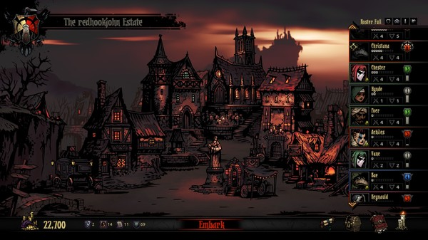

L'une des principales composantes de Darkest Dungeon est le système de stress, qui représente la peur ressentie par le héros alors qu'il parcourt le donjon. Chaque héros a une barre de stress qui se remplit au fur et à mesure d’événements négatifs : attaque d'un ennemi, piège déclenché lors de l'exploration dans l'obscurité, etc. Subir un coup critique augmente davantage le stress et certaines attaques spéciales ennemies augmentent uniquement le stress. Lorsque cette barre de stress est remplie, le héros est frappé d'une « affliction ». Celle-ci va modifier son comportement en tenant moins compte des ordres du joueur (par exemple, un héros va refuser de se soigner, va attaquer l'ennemi sans que le joueur ne lui en ait donné l'ordre, volera certains trésors, etc.). Il existe cependant une petite chance que le héros ne soit pas touché par une affliction et gagne au contraire un bonus. Si la barre de stress se remplit une deuxième fois, le héros peut faire une crise cardiaque ce qui le rend extrêmement vulnérable aux attaques ennemies. En cas de seconde crise cardiaque, si le héros n'a pas été soigné des conséquences de la première, il meurt.
Darkest Dungeon

Darkest Dungeon est un jeu vidéo de type rogue-like, RPG et dungeon crawler, développé et édité par Red Hook Studios, sorti en 2016 sur Windows, Mac, Linux, PlayStation 4 et PlayStation Vita. Il se caractérise par un univers dark fantasy très noir et une grande difficulté. Darkest Dungeon permet au joueur de contrôler une équipe d'aventuriers qui explore des donjons. Le jeu intègre un système original de niveau de stress pour chaque héros, lorsque le niveau de stress est trop haut, le héros gagne une affliction permanente qui peut être négative ou parfois positive. La mort d'un héros est définitive et il n'est pas possible de charger une sauvegarde, ce qui augmente la difficulté du jeu.
Les mécaniques de jeu
le joueur contrôle une équipe de quatre personnages (appelés héros) et parcourt un donjon généré aléatoirement dans le but de remplir une quête (explorer la quasi-totalité des lieux, venir à bout des ennemis présents...). Au cours de l'exploration, le joueur doit mener des batailles qui se déroulent en tour par tour. Si au cours d'une de ces batailles, un héros vient à mourir, sa mort est définitive. Les sauvegardes automatiques effectuées régulièrement empêchent le joueur de charger un point de sauvegarde précédent pour retrouver son héros.

Lors de l'exploration, le niveau de luminosité joue un rôle important, une faible luminosité augmente le stress des héros en marchant et la probabilité d'être surpris par les ennemis, dans ce cas tous les ennemis jouent avant les héros. La faible luminosité a l'avantage d'augmenter les chances de coups critiques et de trouver un meilleur butin, il est possible d'éteindre complètement la torche, la difficulté sera maximale mais les perspectives de butins aussi. Une luminosité élevée augmente la probabilité de surprendre les ennemis et de découvrir à l'avance le contenu des pièces suivantes (compétence de repérage), cette compétence peut découvrir des pièces secrètes. Pour maintenir un niveau de luminosité élevée, le joueur consomme des torches qui doivent être achetées avant l'entrée dans le donjon. Le nombre de torches limite le temps passé à se déplacer dans le donjon, un autre facteur est la nourriture qui doit aussi être achetée avant. Si le joueur n'a plus assez de nourriture, les héros perdent de la vie et subissent du stress. Certains donjons sont plus grands, ils incluent une phase spéciale de bivouac. Pendant cette phase, les héros peuvent utiliser des capacités spéciales, par exemple pour réduire le stress ou gagner des trésors. La nourriture nécessaire au bivouac doit aussi être achetée à l'avance, partir à l'aventure a donc un coût de départ qu'il faudra optimiser selon ses ressources et les perspectives de gains.
Dans la phase du bivouac, le joueur peut recruter de nouveaux héros, améliorer leurs capacités et leur équipement. Il peut aussi soigner les affections des héros. Le niveau de stress de chaque héros est conservé à la sortie du dernier donjon, il peut être réduit en immobilisant le héros dans des lieux spécifiques qui coûtent plus ou moins d'or. Pendant sa guérison, le héros ne sera pas disponible pour la phase de donjon suivante. Au départ le joueur ne peut soigner le stress que d'un héros par type de guérison mais il existe plusieurs types, par exemple un héros peut occuper l'espace de prière, un autre l'espace de flagellation et encore un autre aller boire à la taverne. Chaque type de guérison du stress possède un coût différent, il soignera plus ou moins le héros selon sa personnalité et peut avoir d'autres effets, par exemple soigner un héros à la taverne est peu onéreux mais le héros sera indisponible lors de la phase suivante, le temps de cuver l'alcool. Les espaces de guérison du stress peuvent être améliorés pour accepter plusieurs héros simultanément. Il peut arriver qu'un bonus ou un malus s'ajoute en réaction au soin du stress, par exemple un héros qui prie peut avoir une révélation qui déclenche une manie. Certains héros ont des affections qui leur interdisent certains soins du stress, par exemple être interdit de jeu en ville.

Un bâtiment permet de soigner les manies des héros ainsi que les maladies contractées dans un donjon, mais ces soins sont coûteux. Un autre permet de débloquer et d'améliorer les capacités des héros. De nouveaux héros sont disponibles à chaque phase du hameau, ce qui permet de recruter d'autres héros pour compenser les morts et ceux qui sont immobilisés pour se soigner. En pratique le joueur doit constituer plusieurs groupes pour continuer d'explorer des donjons pendant qu'une équipe se repose. Les donjons plus avancés nécessitent des héros avec des niveaux plus élevés, un héros de niveau élevé peut être difficile à remplacer et les héros plus avancés refuseront de faire des petits donjons avec des héros moins expérimentés. Tous les bâtiments sont améliorables avec des ressources spéciales gagnés dans les donjons. Le nombre maximum de héros recrutés peut être augmenté de la même manière. Il est possible d'équiper des objets magiques appelés breloques sur les héros dans le hameau. Ces objets sont trouvés dans les donjons et en récompense de quête. Chaque héros peut avoir au maximum 2 breloques, certains objets ne peuvent être utilisés que sur une classe particulière. Les breloques inutiles peuvent être revendues pour gagner de l'or.
Présentation des premiers personnages
Le Croisé
Le Croisé est un peu le couteau suisse de Darkest Dungeon. Aussi efficace en DPS qu'en support, sa panoplie de compétences lui permet d'être à l'aise dans tous les cas de figure, notamment grâce à une technique de soin collectif et des buffs régénérant la torche. Il est également l'une des premières classes du jeu que vous aurez l'occasion de contrôler avec le Bandit dans le tutoriel du jeu. Le seul moment où le Croisé brille par ses dégâts et son impact sur le déroulé d'une quête, c'est toutes les explorations qui concerneront les ruines, car il dispose de dégâts supplémentaires natifs sur ses compétences face aux ennemis de type "Impie", notamment les squelettes. En dehors de ça, le Croisé fera le job si vous l'utilisez comme un tank, comme un DPS ou bien en tant que support, mais gardez à l'esprit qu'il existera toujours une classe supérieure à lui dans l'un des 3 axes cités.
Le Bandit
Le Bandit est l'un des deux personnages que le jeu vous donne au début de votre partie avec le Croisé. C'est le premier personnage de type DPS avec lequel vous allez apprendre les bases du jeu et il se trouve être un héros qui excelle dans les attaques à distance en plus d'être solide au niveau de son kit de compétences. Il existe deux possibilités pour jouer le Bandit dans Darkest Dungeon, la première étant bien entendu de le spécialiser sur le combat à distance en privilégiant ses compétences "Tir de pistolet", "Mitraille" et "Tir de pistage". La seconde sera plus orientée sur un style de jeu hybride avec une ou deux compétences au corps-à-corps comme "Ouvre-veine" et "Entaille vicieuse".
La Vestale
La Vestale est la soigneuse attitrée de votre, lors de vos premiers pas dans Darkest Dungeon, il est quasiment obligatoire d'en avoir une dans votre formation. Elle est capable de proférer des soins conséquents sur une cible, ou même de redonner quelques points de vie au groupe entier, très pratique lorsque plusieurs membres sont en situation délicate à 0HP. a Vestale est très certainement la classe qui est la plus jouée et appréciée des joueurs grâce à ses compétences de soins qui en font un élément très rassurant pour les explorations dans Darkest Dungeon. On conseille fortement aux débutants de la privilégier dans vos équipes, avec le Bouffon ils forment la paire de sécurité ultime dans le jeu, en position 4 et 3, entre soins de points de vie et soins de stress. Néanmoins, il est bon de noter que la Vestale ne sait pas que soigner et qu'elle sera aussi un atout utilitaire non-négligeable à votre équipe. En effet, elle peut étourdir des cibles tout en ravivant la flamme de votre torche si vous venez à manquer de lumière dans vos explorations et poser un malus sur vos cibles.
Le Docteur de la peste
Le Docteur de la peste préfère se détacher ses ennemis avec une concoction mortelle de poison qui diminue leur santé. Alors qu'elle occupe habituellement les classements de l'arrière 3 ou 4 offrant un soutien et des dommages sur le temps. Elle a deux des trois Étoiles dans le jeu qui peuvent atteindre le rang 4. Cela seule la rend extrêmement puissante, mais elle a aussi une très bonne utilité comme la guérison secondaire et les capacités offensives avec ses poisons. Son ensemble de compétences est incroyablement utile et polyvalent capable d'éliminer tout DoT de lui-même ou de tout autre allié, écueil les back-ranks de la formation ennemie habituellement avant même qu'ils ne puissent même attaquer.